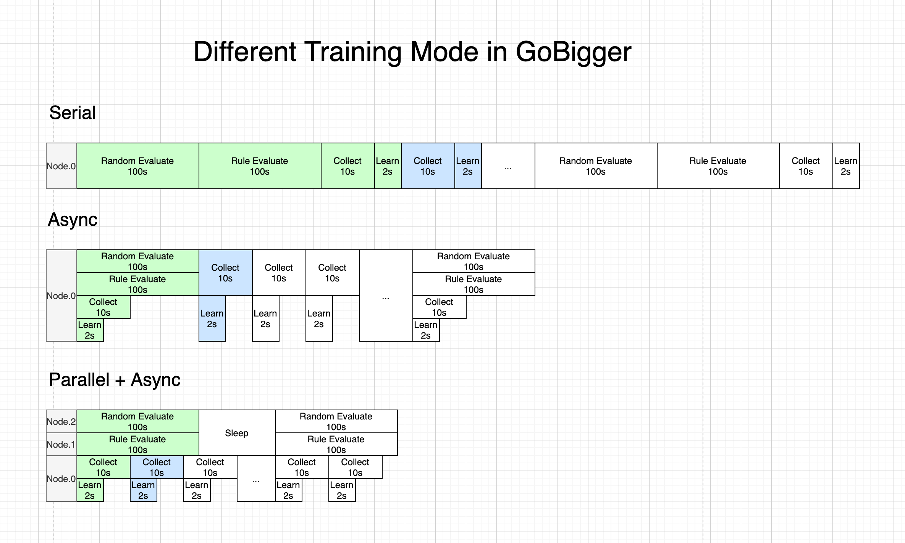
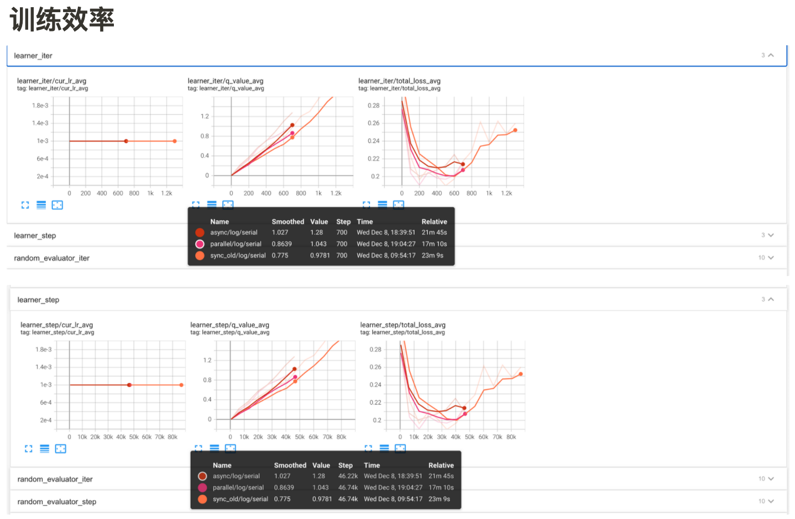

Asynchronous Parallel in GoBigger¶

GoBigger is a multi-agent confrontation game environment open sourced by OpenDILab. The player (AI) controls one or more round balls in the map, gains as much weight as possible by eating food balls and other units smaller than the player’s ball, and needs to avoid being eaten by a bigger ball.
In the competition Players can participate in multi-agent confrontation by submitting rules or models to strive for the best results. When training the RL model, because the entire GoBigger game takes a long time, the evaluation phase often takes up a long time, while the real time for training only occupies a small part. Even if the evaluation is adjusted to training 1000 times before proceeding, it is still a lot of overhead, so we need to use asynchronous parallelism to increase resource utilization.
The code execution process after changing serial to parallel is shown in the figure below:
 As long as the machine has resources remaining, the impact of the evaluation phase on training after the change to asynchronous parallel is almost negligible, and the steps of acquisition and training can be kept continuous without waiting for evaluation in the middle. It can also be seen from the tensorboard record that the asynchronous and parallel version has a great improvement in sample collection and training efficiency compared to the serial version.